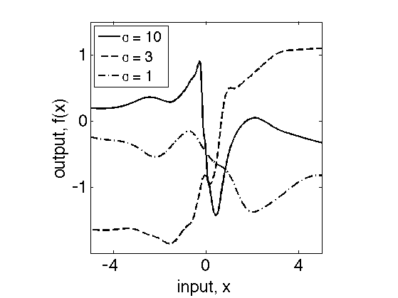
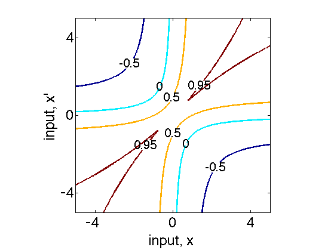

clear
close all
global XVEC XTEST;
XVEC = -5:0.02:5;
XTEST = [-0.27 0.454654];
ndat = size(XVEC,2);
varnoi = 1e-10;
randn('seed',0);
[S, K] = gpnnCov([1, 10.0, 2.0, 1, 0]);
N = varnoi * eye(ndat,ndat);
S = S + N;
L = chol(S);
R = randn(ndat,10);
M = L'*R;
hhh = figure(1);
set(gca,'FontSize',24)
plot(XVEC',M(:,8),'k-','LineWidth',2)
hold on
[S3, K3] = gpnnCov([1, 3.0, 2.0, 1, 0]);
S3 = S3 + N;
L3 = chol(S3);
R3 = randn(ndat,10);
M3 = L3'*R3;
plot(XVEC',M3(:,10),'k--','LineWidth',2)
[S2, K2] = gpnnCov([1, 1.0, 2.0, 1, 0]);
S2 = S2 + N;
L2 = chol(S2);
R2 = randn(ndat,10);
M2 = L2'*R2;
plot(XVEC',M2(:,10),'k-.','LineWidth',2)
set(gca,'FontSize',24);
xlabel('input, x')
ylabel('output, f(x)')
axis([-5 5 -2 1.5])
axis('square')
set(gca,'XTick',[-4 0 4]);
set(gca,'YTick',[-1 0 1]);
hh=legend('\sigma = 10','\sigma = 3','\sigma = 1',2);
set(hh,'FontSize',20)
hold off
hh=figure(2);
XVEC = -5:0.05:5;
[S, K] = gpnnCov([1, 10.0, 10.0, 1, 0]);
[cs,h]=contour(XVEC,XVEC,S,[-0.5 0 0.5 0.95]);
clabel(cs,h,[-0.5, 0, 0.5, 0.95],'labelspacing',900,'fontsize',20,'rotation',0);
axis('square')
set(h,'LineWidth',2)
set(gca,'FontSize',24);
xlabel('input, x')
ylabel('input, x''')
set(gca,'XTick',[-4 0 4]);
set(gca,'YTick',[-4 0 4]);
axis([-5 5 -5 5])
set(hh,'PaperPosition', [0.25 2.5 8 6])
 